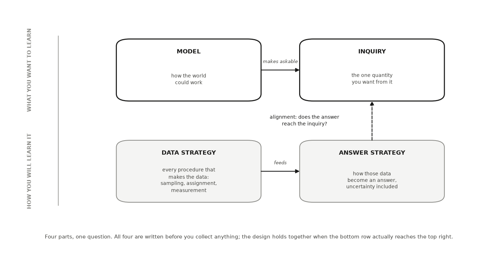
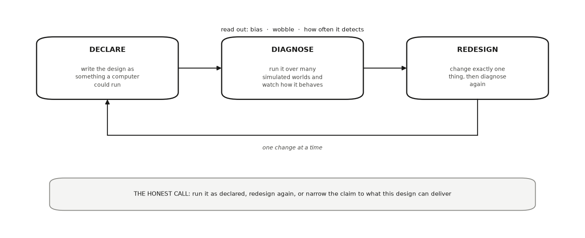

HONR 46400 · Evidence-Driven Research
Studio 4 — Declare and diagnose provisionally
What you can defend when you leave
Studio 4
Write your design down as something specific enough to be diagnosed, then find out how it behaves before it costs you anything.
The milestone ahead
Studio 4
This studio closes with Milestone 4: Your research contract, v0, a short chapter of its own after the lessons. What it asks you to produce. Research Contract v0 — objective, target estimand, population, setting and time, data strategy, a provisional operationalization you mark for revision, warrant, answer strategy and uncertainty statement — plus the design properties you diagnosed (its bias, its wobble, and how often it would detect what you are looking for), your permission status, and a redesign record. Measurement proper is taught and assessed in Studio 6; here you only commit to a starting choice and say why it is defensible for now.
The lessons in this studio
Studio 4 · Road map
- Lesson 10 — Model, Inquiry, Data Strategy, and Answer Strategy: your MIDA declaration: model, inquiry, data strategy, and answer strategy, with the alignment sentence that ties them together — carrying population, setting and time, the provisional operationalization, and the warrant into Contract v0.
- Lesson 11 — Uncertainty Before You Need It: your estimand and estimator, the repeat-run story behind them, your dependence structure, and your uncertainty sentence next to its wrong twin.
- Lesson 12 — Declaring and Diagnosing a Research Design: your design diagnosis: bias, wobble, and power read from simulation, one redesign, and the honest call that followed.
- Lesson 13 — Research Ethics and Data Governance: your declared permission status, your minimised column list, your AI boundary, and your four governance decisions.
Model, Inquiry, Data Strategy, and Answer Strategy
Lesson 1 of this studio · Chapter 10
the four parts of your design, and whether all four point at the same quantity
The research decision
Chapter 10
The four parts of your own design, written down before any data exist: a model of the world, the one named quantity you want out of it, a plan for how the data arrive, and a plan for turning that data into your quantity. Then the harder call: whether those four parts actually point at the same thing.
An analytics lead asks for the number first, then the route to it
Chapter 10 · Why this decision matters
- She reads your one-page design before you spend months on it.
- “Show me the exact number you are after.”
- “Then show me that the way you collect and crunch the data can actually reach that number.”
- “If those two drift apart, every result you bring me answers a question I never asked.”
Getting the four parts to agree on paper is the cheapest check you run
Chapter 10 · Why this decision matters
- Do the check before you inspect any outcome-bearing field.
- Do it before you compute the answer.
A design that skips this step is not rigorous. It is a hope with good formatting.
Any research design can be written as four parts, and the four have names
Chapter 10 · The concept
Blair, Cooper, Coppock and Humphreys named that framework MIDA, one letter each (Blair et al. 2019).
Model
your written picture of how the world could work: which things exist and what could affect what
Inquiry
the one exact quantity you want from that world, named before any outcome arrives
Data strategy
every procedure that makes your data exist: who gets sampled, who gets which condition when you assign one, how each outcome is measured
Answer strategy
the whole procedure that turns those data into an answer, uncertainty included
Written for one recommender, each part is a single plain sentence
Chapter 10 · The concept
- Model: a listener’s chance of accepting a recommended song runs from 0 to 1.
- A new recommender could nudge that chance up.
- Inquiry: the average lift in accept rate the new recommender causes across listeners.
- Data strategy: randomly send each session to the old or new recommender, then log every accept.
- Answer strategy: accept rate in the new group minus the old, reported with an interval.
The dashed arrow is the check that matters
Chapter 10 · The concept
- Top row is what you want to learn. Bottom row is how you plan to learn it.
- All four are written down before you collect anything.
- The dashed arrow asks whether your answer strategy reaches the inquiry you named.

The four parts of a design. The top row is what you want to learn; the bottom row is how you plan to learn it. All four are written down before you collect anything, and the dashed arrow is the check that matters: your answer strategy has to reach the inquiry you named.
The four are not a checklist, and they have to align
Chapter 10 · The concept
- You do not fill them in any order (Blair et al. 2023).
- Align means your data and answer strategies reach the inquiry your model makes askable.
- Misaligned: a causal inquiry, but the people who see the new version differ systematically.
- That comparison delivers an association: two things move together, with no proof one caused the other.
Your data do not get to rewrite your question
Chapter 10 · The concept
- The inquiry is still causal. This design simply does not reach it.
- The absence of randomizing does not settle the matter either.
- Observational designs can carry causal answers with a defended identification argument suited to the design.
- Honest diagnosis: causal inquiry, currently unidentified under this data and answer strategy (Hernán & Robins 2020).
- Naming that on paper is the whole job here.
Each listener has two accept rates; the inquiry is their average difference
Chapter 10 · A worked example
- A music-streaming company tests whether a new autoplay recommender raises how often listeners keep the track.
- Model: one accept rate under the old recommender, one under the new.
- The new one could be higher, lower, or the same.
- Inquiry: the average difference across all listeners. One number, causal in kind.
- Data strategy buckets each session at random; the answer strategy subtracts the two rates.
Random bucketing is what licenses the word “causes”
Chapter 10 · A worked example
- The inquiry asks for a caused difference.
- Random bucketing breaks the link between who the listener is and which version they see.
- Nothing about the listener decides which version they get, so the four parts agree.
The shortcut changes the claim, not the question
Chapter 10 · A worked example
- Ship the new recommender to new users, compare them against existing users on the old one.
- New and existing users differ in ways that also move accept rate.
- The inquiry stays exactly what it was: the caused lift.
- What the evidence supports drops from “causes” to “is associated with”.
- Same question, broken alignment.
Same model, same inquiry: watch the second number miss the truth
Chapter 10 · A worked example
- The simulation builds a true caused lift of 4 points into every listener.
- Data strategy 1 buckets at random. Data strategy 2 ships the new version to new users.
- SEED = 464, so the three printed numbers come out the same for you.
import numpy as np, pandas as pd
SEED = 464
rng = np.random.default_rng(SEED)
n = 4000
# MODEL: each listener has two accept rates; the new recommender adds 4 points.
heavy = rng.random(n) < 0.45 # heavy listeners accept more anyway
accept_old = 0.30 + 0.18 * heavy
accept_new = accept_old + 0.04
# DATA STRATEGY 1 — random bucketing: nothing about the listener decides arm.
new_arm = rng.random(n) < 0.5
kept = np.where(new_arm, rng.random(n) < accept_new, rng.random(n) < accept_old)
randomized = kept[new_arm].mean() - kept[~new_arm].mean()
# DATA STRATEGY 2 — the shortcut: ship "new" to new users, who differ.
is_new_user = ~heavy # new users are the lighter listeners
kept2 = np.where(is_new_user, rng.random(n) < accept_new, rng.random(n) < accept_old)
shortcut = kept2[is_new_user].mean() - kept2[~is_new_user].mean()
print(f"true caused lift : {0.04:+.3f}")
print(f"randomized buckets : {randomized:+.3f}")
print(f"new-vs-existing users : {shortcut:+.3f}")
print("\nsame inquiry both times. the second design does not answer it —")
print("the inquiry stays causal and is now unidentified")An AI failure case
Chapter 10
Where the tool failed
You paste your streaming question and ask for MIDA. The tool returns four confident, well-formatted parts and calls the design “rigorous.” Read closely: it wrote the data strategy as “compare new users on the new recommender to existing users on the old one,” and it kept the inquiry worded as a caused lift. That is two failures at once. The data strategy is plausible-but-wrong, because user tenure moves accept rate on its own. And the draft presents that comparison as if it answers the caused-lift inquiry, a silent scope change from what the evidence supports (an association) to what the write-up claims (a cause). The inquiry may keep its causal wording; what it may not do is borrow this comparison as its answer. You catch it two ways: set the inquiry’s words beside the data strategy and ask whether randomization actually happened, then sketch the model as a diagram and look for an arrow from “user tenure” into both the version seen and the accept rate. That open arrow is the confounder the fluent draft never mentioned.
Do not delegate
Chapter 10
This stays yours
Three choices stay yours. Which world your question assumes (the model, and so what could confound it). Which single quantity you want (the inquiry, named in your words, not the AI’s paraphrase). Whether your four parts align, and therefore whether your claim boundary is causes, only is associated with, or causal but not yet identified by this design. That third state is a real answer, and keeping your question while admitting the design cannot reach it is more honest than shrinking the question to fit the data. An AI can draft candidate parts. Deciding they agree, and owning the claim that follows, is research judgment you cannot hand off.
It is your turn
Chapter 10 · Your move
- Write your model in three or four sentences of plain language.
- Write your inquiry as one sentence naming one quantity: an average, a difference, a rate, a share.
- Write your data strategy: who or what gets sampled, from which list, and who gets which condition, if any.
- Write your answer strategy: the arithmetic that turns your data into your inquiry.
- Audit the alignment yourself and write the one sentence that matters: “Because my data strategy is , the strongest honest wording of my result is .” If that sentence lands on is associated with rather than causes, you have not failed; you have found your claim boundary early, which is the point.
- Log the draft in your AI Research Ledger, then verify the alignment claim with a named method from the Verification Guide; peer reasoning or a causal diagram both fit.
Work it in the companion notebook with Chapter 10 open beside it. Log every delegation in your AI Research Ledger.
Uncertainty Before You Need It
Lesson 2 of this studio · Chapter 11
The research decision
Chapter 11
What quantity you are actually after, what recipe you will use to guess it, and what you will say about how much that guess could have moved. You decide all three before you inspect the outcomes, because each one changes what the others are allowed to mean.
Your number is one draw from a procedure
Chapter 11 · Why this decision matters
The honest question is not ‘is my number right?’
- Different households answered. Different weeks got sampled.
- A coin came up heads for this village and tails for that one.
- Ask instead: how much does a number from this procedure move around?
You run your study once; the pile describes the procedure
Chapter 11 · Why this decision matters
- ‘I only get to run my study once. What good is imagining a thousand runs?’
- A procedure can be studied by repetition even when your study cannot.
- That is why you can report uncertainty from a single sample.
- Bias, power and coverage in the next chapter all describe this pile.
The estimand does not move. The estimate does.
Chapter 11 · The concept
Estimand
the quantity you want, defined in the world before you touch the outcome data
Estimator
the recipe you apply to data to guess the estimand
Estimate
what one run of the recipe returns
- Estimand: the average monthly rent of all 4,000 households, one town, one month.
- Estimator: draw 60 households at random and take their average rent.
- Estimate: 1,621. One number, from one run, on one day.
Repeat the recipe and the answers form a shape
Chapter 11 · The concept
- Run the survey again on the same town and you get a different estimate.
- Run it 2,000 times and the 2,000 estimates pile up into a shape.
- Sampling distribution: the pile you would get from repeating your whole procedure many times in the same world.
- It is a property of the procedure, not of any one run.
Watch two honest surveys disagree
Chapter 11 · The concept
- The estimand is computed from all 4,000 households, before any survey runs.
- The first survey said 1,621. The second said 1,655.
- Neither is a mistake. Both are what this recipe does.
import numpy as np
SEED = 464
rng = np.random.default_rng(SEED)
town = rng.lognormal(mean=7.3, sigma=0.35, size=4000) # every household's rent
estimand = town.mean() # the quantity we want
# the recipe: survey 60 households at random, take the mean
means = np.array([rng.choice(town, size=60, replace=False).mean()
for _ in range(2000)])
print(f"estimand (true average rent): {estimand:,.0f}")
print(f"one survey said: {means[0]:,.0f}; another said: {means[1]:,.0f}")
print(f"centre of the pile: {means.mean():,.0f}")
print(f"spread of the pile: {means.std(ddof=1):,.0f}")
print(f"middle 95% of the pile: {np.percentile(means, 2.5):,.0f}"
f" to {np.percentile(means, 97.5):,.0f}")Those three numbers are what uncertainty language exists to say
Chapter 11 · The concept
- Centre 1,569 against a truth of 1,568: the recipe aims true.
- Spread about 72: how far one survey typically lands from the centre.
- Middle 95% runs from 1,431 to 1,713.
- Where the pile sits. How wide it is. What range covers nearly all of it.
Width is not aim, and a 95% recipe is not a 95% range
Chapter 11 · The concept
Standard error
the typical distance between one run’s estimate and the centre of the pile
Confidence interval
a range built by a recipe that catches the estimand a stated share of the time, when the same recipe is repeated
- For this survey the standard error is about 72.
- It does not say how wrong today’s estimate is.
- A tightly packed pile can still sit centred on the wrong quantity.
- The next chapter gives aim its own name.
The intervals caught the truth 94.8% of the time
Chapter 11 · The concept
- The width here is estimated from ONE survey, not from the pile.
- Count how often the range brackets 1,568 across 2,000 runs.
- Any one interval either caught 1,568 or missed it, and you would never know which.
rng = np.random.default_rng(SEED)
n, runs, hits = 60, 2000, 0
for _ in range(runs):
s = rng.choice(town, size=n, replace=False)
se = s.std(ddof=1) / np.sqrt(n) # width estimated from ONE survey
lo, hi = s.mean() - 1.96 * se, s.mean() + 1.96 * se
hits += lo <= estimand <= hi
print(f"share of intervals that caught the truth: {hits / runs:.1%}")Fixed numbers do not have chances
Chapter 11 · The concept
- The honest sentence about your own study is quoted below.
- The dishonest one: ‘a 95% chance the true average is between 1,470 and 1,771.’
- The honest sentence describes a procedure. The dishonest one claims a chance for a fixed number.
- Your computed interval either contains the truth or it does not (Greenland et al. 2016).
my estimate is 1,621, from a procedure whose 95% intervals catch the true average about 95 times in 100
Same 60 households, and everything about the uncertainty changed
Chapter 11 · A worked example
- A business-school team wants this month’s average rent, to price a housing product.
- Plan: survey 60 households drawn at random, report a 95% interval.
- Cheaper plan: draw 12 buildings at random, survey 5 rented flats in each.
- Nothing about the estimand changed. Nothing about the arithmetic changed.
Flats in one building already tell you about each other
Chapter 11 · A worked example
- Dependence: learning one observation changes what you should expect about another.
- One landlord, one neighbourhood, one heating system, one rent schedule.
- Another flat in the same building adds less than a fresh independent flat would.
- The arithmetic does not notice. The procedure’s honesty does.
The naive interval promised 95% and delivered 63.2%
Chapter 11 · A worked example
- Two intervals, same data: 60 flats, or the 12 building means.
- Watch the two catching rates, not the estimates.
- Nothing in the output would have warned the team.
rng = np.random.default_rng(SEED)
B, K, truth, runs = 12, 5, 2000.0, 2000 # 12 buildings, 5 flats each
naive_hits = cluster_hits = 0
for _ in range(runs):
building_effect = rng.normal(0, 260, B) # landlord/neighbourhood effect
data = np.array([truth + building_effect[b] + rng.normal(0, 120, K)
for b in range(B)])
flats = data.ravel() # pretend: 60 independent flats
se_naive = flats.std(ddof=1) / np.sqrt(60)
naive_hits += (flats.mean() - 1.96 * se_naive <= truth
<= flats.mean() + 1.96 * se_naive)
b_means = data.mean(axis=1) # honest: 12 independent buildings
se_cluster = b_means.std(ddof=1) / np.sqrt(B)
cluster_hits += (b_means.mean() - 1.96 * se_cluster <= truth
<= b_means.mean() + 1.96 * se_cluster)
print(f"treating 60 flats as independent: {naive_hits / runs:.1%} caught the truth")
print(f"treating 12 buildings as the unit: {cluster_hits / runs:.1%} caught the truth")Sixty flats in 12 buildings carry roughly the information of 14 independent flats
Chapter 11 · A worked example
- That number comes from these data, not from a rule about group size.
- ‘My observations are dependent’ does not tell you which way to correct.
- Direction depends on the design, the estimator, and how your units relate.
- A design that balances within each group can narrow the pile instead.
Extra buildings buy precision; extra flats inside one buy little
Chapter 11 · A worked example
With the variability this example assumes, and not as a general rule.
- Doubling flats per building, five to ten, moves the spread from about 77 to 76.
- Doubling the buildings instead moves it to about 54.
- The wobble from which buildings you picked is untouched by measuring more flats.
- Extra flats are not worthless. They run into sharply diminishing returns.
An AI failure case
Chapter 11
Where the tool failed
Ask an assistant to interpret an interval and you will very often get this, fluently and confidently:
How it failed
Chapter 11 · An AI failure case
- The number is fine.
- The sentence is not.
- The true average is a fixed quantity, and your computed range is now fixed too, so no probability is left to assign between them.
- What is 95% is the long-run catching rate of the recipe that produced the range.
- This one matters more than it looks.
Do not delegate
Chapter 11
This stays yours
- The estimand. What you are trying to learn is a research decision, not a modelling detail. Nobody can hand it to you.
- The claim your interval makes. You are responsible for the sentence that goes in the paper, including refusing the flattering version of it.
- The independent unit. Only you know how your data were really collected.
It is your turn
Chapter 11 · Your move
- State your estimand in one sentence, as a quantity in the world with a population, a setting, and a time.
- State your estimator as a recipe: what you will collect, and exactly what you will compute from it.
- Name what would differ on a repeat. Write the two or three things that would come out differently if selection and measurement ran again for the same target population, setting, and time.
- Name your dependence structure. List the levels at which your observations were sampled, repeated, or connected, and how many units you have at each level.
- Write your uncertainty sentence, and then write the wrong version of it. State what your interval will and will not claim.
- Log it. Add your AI Research Ledger rows for anything you delegated here, and record which decisions you kept.
Work it in the companion notebook with Chapter 11 open beside it. Log every delegation in your AI Research Ledger.
Declaring and Diagnosing a Research Design
Lesson 3 of this studio · Chapter 12
whether this design is strong enough to run, judged before you spend anything collecting data
The research decision
Chapter 12
Whether the design you wrote down is strong enough to run, decided before you collect a single data point: you simulate it, read how often it lands on the truth, and name the one change that most improves it. Then you either run it, fix it, or narrow what you promised.
The words this chapter uses
Chapter 12 · Key terms
Diagnose
running that declared design many times on fresh simulated worlds and watching how its estimate behaves.
Bias
the average of your errors across the runs, counting direction: each estimate minus the truth, averaged.
Variance
how much the estimate wobbles from one run to the next.
Power
how often the design detects a real effect, and it means nothing until you say how you would decide (Greenland et al. 2016).
A methodologist asks how often your design would work
Chapter 12 · Why this decision matters
- A methodologist on your committee reads your plan and asks one question.
- “How often would this exact design catch the real effect if you ran it a thousand times?”
- If your answer is “I never checked,” she stops there.
A design can read beautifully and still come back empty
Chapter 12 · Why this decision matters
- A sharp question and a clean comparison are not proof of strength.
- The same design can return “nothing here” nine times out of ten.
- Or it can land confidently on the wrong number every time.
- Simulation finds that out cheaply, before you collect a single data point.
Declaring means writing your design so a computer can run it
Chapter 12 · The concept
- You already built the four parts of a design.
- A model that generates fake data, and an inquiry it can compute on that data.
- A plan for sampling and assigning conditions, and a rule that turns data into an estimate.
- Example: 40 shoppers, a coin flip for the new checkout screen, two group averages subtracted.
Diagnosing means watching the estimate behave across many runs
Chapter 12 · The concept
- Run the declared design many times on fresh simulated worlds.
- Example: run the coin-flip study 2,000 times and collect all 2,000 estimates.
- Watch how the estimate behaves across those runs, not in any one of them.
- Three numbers start the story, and each answers a different worry.
Bias counts direction, so misses that cancel are not bias
Chapter 12 · The concept
- The truth is 2. Five runs return 0, 1, 2, 3, and 4.
- The errors are -2, -1, 0, +1, +2, which average to zero.
- Bias is zero even though only one run landed on 2.
- Misses that all lean one way tell you the design is tilted.
Variance is the one problem size reliably helps
Chapter 12 · The concept
- Variance is how much the estimate wobbles from one run to the next.
- Example: estimates swinging between -5 and +9 around a true value of 2.
- More of the same kind of data, from the same design, usually shrinks that wobble.
Power means nothing until you say how you would decide
Chapter 12 · The concept
- Power is how often the design detects a real effect.
- Example rule for checkout: call it an effect when the gap exceeds about twice its typical wobble.
- At the usual 5 percent setting, a zero-effect design still cries effect in about 5 runs of 100.
- That threshold is never the chance your one finding is false.
- Clearing the rule in 8 of 100 runs, when the truth is 2, is 8% power: almost useless.
One number is never the whole diagnosis
Chapter 12 · The concept
Bias, variance, and power are properties of the design read across many runs, never off a single study.
Diagnosand
a property of a design you want to diagnose
Root mean-squared error
the typical size of a miss, with big misses weighted extra
Coverage
how often the range you report around your estimate actually contains the truth
Redesign changes exactly one part, then diagnoses again
Chapter 12 · The concept
- Change one part in response to the diagnosis, then run the diagnosis again.
- Low power that comes from high variance calls for more data.
- A tilt built into the design calls for a different design.
- More data makes a tilted estimate steadier, not truer.
The call to run, revise, or narrow sits outside the loop
Chapter 12 · The concept
You can go around as many times as the diagnosis asks, changing one thing each time.

The loop, and the call that ends it. You can go around as many times as the diagnosis asks, changing one thing each time, but the decision to run, revise, or narrow the claim is never inside the loop.
You set the button’s true effect yourself, at 8 seconds saved
Chapter 12 · A worked example
- An online grocer asks whether a one-tap reorder button speeds up checkout.
- The button rebuilds a shopper’s last cart in a single press.
- Your outcome is seconds-to-complete.
- In the world you simulate, the button shaves 8 seconds off.
The pilot is honest and useless at once
Chapter 12 · A worked example
- You diagnose a pilot of 12 shoppers per version.
- Bias is near zero, so the design aims true.
- The spread is huge, because per-person times vary so much.
- Power comes back under 10%.
Size cured the variance and did nothing for the opt-in design
Chapter 12 · A worked example
- Raise the sample to 400 per version: power jumps past 90%.
- Now drop the coin flip and let shoppers opt into the button themselves.
- The ones who opt in are the frequent, practiced shoppers who check out faster anyway.
- That design is just as tight at 400 per version, yet it centers on 14 seconds.
- No amount of extra data moves it.
The bias column and the power column answer different questions
Chapter 12 · A worked example
- The block declares all three designs and diagnoses each one.
- That is the whole loop this chapter teaches.
- Read the bias column and the power column as two different questions.
- The last printed line says it: size cured the variance, not the opt-in bias.
import numpy as np, pandas as pd
SEED = 464
rng = np.random.default_rng(SEED)
TRUE_EFFECT = -8.0 # seconds the button really saves
def run(n_per_arm, randomize, runs=2000):
"""Declare a design once, then diagnose it by running it many times."""
out = []
for _ in range(runs):
base = rng.normal(150, 32, size=2 * n_per_arm) # people differ a lot
if randomize:
treated = rng.random(2 * n_per_arm) < 0.5
else: # shoppers opt in — the fast ones do
treated = rng.random(2 * n_per_arm) < 1 / (
1 + np.exp((base - 150) / 170))
secs = base + TRUE_EFFECT * treated + rng.normal(0, 8, size=2 * n_per_arm)
out.append(secs[treated].mean() - secs[~treated].mean())
est = np.array(out)
se = est.std(ddof=1)
return {"estimate": est.mean(), "bias": est.mean() - TRUE_EFFECT,
"power": float((np.abs(est) > 1.96 * se).mean())}
designs = {"pilot, randomized, 12/arm": run(12, True),
"randomized, 400/arm": run(400, True),
"opt-in, 400/arm": run(400, False)}
print(pd.DataFrame(designs).T.round(2).to_string())
print("\nsize cured the variance. it did nothing for the opt-in design's bias")An AI failure case
Chapter 12
Where the tool failed
You paste your confounded observational design and ask, “My estimate is noisy. What should I do?” The tool answers with confidence: “Collect more observations to tighten your estimate.” That sounds obviously right and is exactly wrong for your case. Your problem is bias from self-selection, not variance, and more data only makes a biased estimate a more precise wrong number. You catch it the way this chapter teaches: run the confounded design in simulation at a large sample and watch the estimates cluster tightly around 14 seconds when the truth is 8. The spread shrank; the error did not. That is the plausible-but-wrong-method failure, and your own diagnosis unmasks it.
Do not delegate
Chapter 12
This stays yours
Three calls stay yours. Which world your question assumes, the model you declare, is a claim about reality no tool can make for you. Which single quantity you name as your inquiry decides what “success” even means. And the honest call of whether to run a design your own diagnosis says is too weak is a judgment you sign your name to. An AI can propose threats and draft simulation code, but it cannot decide that your under-powered study is worth months of your life anyway.
It is your turn
Chapter 12 · Your move
- Declare your design as something that can be run.
- Diagnose it.
- Name the worst of the three, and say which kind of problem it is.
- Redesign once.
- Make the honest call in one sentence: run it as redesigned, redesign again, or narrow the claim to what this design can actually deliver.
- Log both diagnoses in your AI Research Ledger, and verify the key number with a named method from the Verification Guide; simulation is the method for a claim about how a procedure behaves, and a causal diagram is the second check if your inquiry uses the word causes.
Work it in the companion notebook with Chapter 12 open beside it. Log every delegation in your AI Research Ledger.
Research Ethics and Data Governance
Lesson 4 of this studio · Chapter 13
The research decision
Chapter 13
Whether you are permitted to collect the data your design calls for, who decides that, and how you will hold the data once you have them. You settle this before collection starts, because it is the one design flaw no later analysis can repair.
The words this chapter uses
Chapter 13 · Key terms
Cleared
no formal determination is needed and you can say why in one sentence.
Formal determination required
a competent authority has to rule before you collect.
Pending
you asked and are waiting.
Not authorized — stop
you may not proceed as planned.
This is the one mistake no later analysis can repair
Chapter 13 · Why this decision matters
- A bad estimator can be swapped. A weak design can be redesigned.
- Data collected without permission cannot be fixed by any amount of later care.
- The thing that went wrong already happened to someone.
- Work collected without the right permissions often cannot be published or presented.
Someone else rules on your permission status
Chapter 13 · The concept
This chapter is not legal advice, and rules differ by country, institution, and data source.
Permission status
a statement of whether you may collect, who decided, and what you are waiting on
Competent authority
whoever, at your institution, is empowered to make this ruling
Your project lands on exactly one of four statuses
Chapter 13 · The concept
- Cleared: a published national statistics table, with no individual records in it.
- Formal determination required: you plan to interview people about their experience of unemployment.
- Pending: protocol submitted, and you refine the interview guide while you wait.
- Not authorized — stop: a licence that forbids the use you have in mind.
The determination turns on three questions, asked in order
Chapter 13 · The concept
- Is this meant to produce knowledge that generalizes? Not ‘will I publish it’ (U.S. Department of Health and Human Services 2026).
- Do living people, or data about identifiable living people, enter your study?
- How do the data reach you, and are they sensitive?
- If the first two are yes: assume formal determination required until your competent authority rules otherwise.
Six situations look exempt, and often are not
Chapter 13 · The concept
- Public posts: availability and permission are separate questions (Franzke et al. 2020).
- Your classmates are human subjects, and classroom power makes consent harder.
- Interviewing a professional about their organization is sometimes outside the scope. Their own experience flips it.
- A public dataset with individual records: access is not identifiability.
- “I am not going to publish it” is the most common escape hatch, and the weakest.
Deleting names is not de-identification
Chapter 13 · A worked example
- The question: do first-generation students use campus advising differently from continuing-generation students?
- The plan: a short survey of 800, names removed before anything is analyzed.
- De-identification means a person cannot reasonably be picked out of the data.
- Deleting names is not that. The remaining columns can still single someone out (Sweeney 2000).
Four ordinary columns, and two in three respondents are unique
Chapter 13 · A worked example
share_uniqueis the share of rows whose combination of columns occurs exactly once.- Department alone singles out nobody. Department and year together, still nobody.
- Add country of origin and 30.2% are alone. Add age and 67.6% are.
import numpy as np
from collections import Counter
SEED = 464
rng = np.random.default_rng(SEED)
n = 800
dept = rng.integers(0, 12, n) # 12 departments
year = rng.integers(1, 5, n) # 4 class years
country = rng.choice(np.arange(28), size=n,
p=np.r_[0.45, 0.10, 0.07, 0.05, 0.04, np.full(23, 0.29 / 23)])
age = np.clip(rng.normal(20.5, 2.2, n).round().astype(int), 17, 35)
def share_unique(*cols):
keys = list(zip(*cols))
counts = Counter(keys)
return sum(1 for k in keys if counts[k] == 1) / len(keys)
print(f"unique on department alone: {share_unique(dept):.1%}")
print(f"unique on department + year: {share_unique(dept, year):.1%}")
print(f"unique on department + year + country: {share_unique(dept, year, country):.1%}")
print(f"and adding age: {share_unique(dept, year, country, age):.1%}")The protection failed most for the least common characteristics
Chapter 13 · A worked example
- Among respondents from the most common country, 40.3% are unique.
- Among those from less common countries, 97.2% are.
- A measure that works for the majority and fails for a minority is not protection.
rare = country >= 5 # students from less-common countries
common = country == 0 # students from the most common one
print(f"unique among less-common-country students: "
f"{share_unique(dept[rare], year[rare], country[rare], age[rare]):.1%}")
print(f"unique among most-common-country students: "
f"{share_unique(dept[common], year[common], country[common], age[common]):.1%}")The fix is fewer columns, decided before collection
Chapter 13 · A worked example
- Not more deleting. Decide which columns your declared analysis actually requires.
- Comparing first-generation and continuing-generation groups may not need country at all.
- Age may be needed only as a range.
- Then the risky combination never exists (European Parliament and Council of the European Union 2016).
A signature captures one moment. Consent is a condition you maintain.
Chapter 13 · Consent is a process
- Informed consent is the ongoing condition that a participant understands and agrees (National Commission for the Protection of Human Subjects of Biomedical and Behavioral Research 1979).
- They understand what you will do with their words, in language they actually use.
- They can decline without cost, which is hardest where you hold any power.
- They can withdraw later, so you must know which data are theirs.
Pasting data into an AI tool can be a disclosure
Chapter 13 · AI and the exposure question
- A disclosure passes data to a third party your permission did not cover.
- Your participants agreed to share with you and your project.
- They did not agree to share with whatever service you found convenient.
- That does not make AI unusable here. It makes the boundary matter.
Check the tool before you paste, and report it if you slip
Chapter 13 · AI and the exposure question
- Check retention, whether inputs train the model, human review, and storage location.
- Some agreements prohibit third-party processing outright, and no setting inside the tool changes that.
- An institution-provided tool is not automatically approved for every dataset.
- When a transfer is authorized, send the smallest fragment that does the job.
Four governance decisions you cannot retrofit
Chapter 13 · Data governance for a small project
- Where the data live: one named location, backed up, not scattered.
- Who can open it: name the people. “The group chat” is not access control.
- How long you keep it: set an actual date now.
- What happens at the end: deletion, transfer, or deposit under the licence you promised.
Four diagnoses, each with a tell you could have caught earlier
Chapter 13 · Four situations that must stop or wait
When the answer is stop, you are one design decision away from a different project.
- Scraping a debt-support forum: you would not read those posts aloud with names attached.
- Surveying your own study group: you can name every respondent.
- Pasting 200 agreement-bound rows: you accepted terms you had not read.
- The interview that turned: you asked about the organization, the answer was about a person.
An AI failure case
Chapter 13
Where the tool failed
Describe a study to an assistant and ask whether you need approval, and you will usually get a fluent, specific, reassuring answer:
How it failed
Chapter 13 · An AI failure case
- Three things are wrong at once.
- The tool does not know your jurisdiction or your institution’s rules for student projects.
- It does not know your data source’s licence.
- And it has stated a conclusion, which is the one thing in this chapter that is not yours or its to state.
- The failure is worse than an ordinary wrong answer, because it is exactly the answer you were hoping for, delivered in the register of someone who knows.
Do not delegate
Chapter 13
This stays yours
- The determination. Only your competent authority can rule on your project. No tool, and no confident classmate, can do it for you.
- What you promise participants. You will be held to those words, so they must be yours.
- What leaves your machine. Every paste is a decision about somebody else’s data.
It is your turn
Chapter 13 · Your move
- Run the determination. Answer the three questions in writing: is your knowledge meant to travel, do identifiable living people enter your study, and how do the data reach you.
- Declare one permission status — cleared, formal determination required, pending, or not authorized — and name the competent authority at your institution who covers student projects.
- List your columns and minimise them. Write every variable you plan to collect, then cross out the ones your declared analysis does not require.
- Run the uniqueness check on your planned quasi-identifiers, using the companion notebook.
- Write your AI boundary in two lines: what you will send to an AI tool on this project, and what you will never send.
- Write your four governance decisions — where the data live, who can open them, how long you keep them, and what happens at the end.
- Write your stop plan. In one sentence: if your determination comes back “not authorized”, what is the version of this question you would ask instead?
Work it in the companion notebook with Chapter 13 open beside it. Log every delegation in your AI Research Ledger.
Milestone 4: Your research contract, v0
Studio 4 closes here
What the lessons handed you becomes one artifact you can defend.
What this milestone produces
Milestone 4
The artifact
What this milestone produces. Research Contract v0 — objective, target estimand, population, setting and time, data strategy, a provisional operationalization you mark for revision, warrant, answer strategy and uncertainty statement — plus the design properties you diagnosed (its bias, its wobble, and how often it would detect what you are looking for), your permission status, and a redesign record. Measurement proper is taught and assessed in Studio 6; here you only commit to a starting choice and say why it is defensible for now.
What you bring
Milestone 4 · Check before you start
- Lesson 10 — Model, Inquiry, Data Strategy, and Answer Strategy: your MIDA declaration: model, inquiry, data strategy, and answer strategy, with the alignment sentence that ties them together — carrying population, setting and time, the provisional operationalization, and the warrant into Contract v0.
- Lesson 11 — Uncertainty Before You Need It: your estimand and estimator, the repeat-run story behind them, your dependence structure, and your uncertainty sentence next to its wrong twin.
- Lesson 12 — Declaring and Diagnosing a Research Design: your design diagnosis: bias, wobble, and power read from simulation, one redesign, and the honest call that followed.
- Lesson 13 — Research Ethics and Data Governance: your declared permission status, your minimised column list, your AI boundary, and your four governance decisions.
The practice
Milestone 4 · In the studio
- Write the four MIDA parts of your design so a stranger could run them. (MIDA is Blair, Cooper, Coppock, and Humphreys’ framework, developed at book length in RDSS.)
- State your estimand and estimator, and describe in words what would differ if the procedure ran again.
- Diagnose the design: what is its bias, how much does it wobble, and how often would it detect what you are looking for.
- Run the permission determination and declare one status; if it is anything but cleared, name the authority and the date you asked.
- Minimise your columns against the declared analysis, and check what a re-identification test would find.
- Write the redesign record - what you changed after diagnosing, and why. A diagnosis that changed nothing is a diagnosis you should distrust.
The four rails, here
Milestone 4 · Every studio, these four
Ethics, permissions, and data exposure
The permission status produced here gates every later studio; nothing downstream may proceed past a stop.
Evidence, provenance, and reproducibility
Your data strategy names actual sources from the Studio 3 registry, not source types.
AI activity, verification, and human decisions
Diagnosis is delegable; the choice of what to fix is not.
Uncertainty, claim boundary, and revision history
This is where your uncertainty statement is first written down and first tested.
A version, not a pass
Milestone 4
How the record works
Your milestone artifact is a dated, numbered version with the reason for the version attached. When later evidence changes it, you write the next version rather than editing the last one, because the sequence of changes is itself part of your research record.
The one rule
AI is your arm and your research assistant, not your brain.
AI can review AI, and a second model is a real auditor of the first. The last decision is always human.

EDR|AI · Studio 4 — Declare and diagnose provisionally